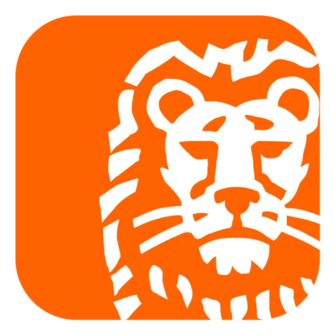

Bonus ING 50€
Nuova edizione: apri il Conto Corrente Arancio Più con il codice amico entro il 20 dicembre, chiedi la carta e spendi 150€ entro il 28 febbraio. 50€ di cashback entro il 31 marzo 2027, senza lasciare fermo un euro.
Come ottenere il bonus ING: procedura passo-passo
- Apri il Conto Corrente Arancio Più dal sito ing.it o dall'app ING entro il 20/12/2026. L’Arancio Light non dà diritto al bonus da invitato: è l’errore più frequente di questa promo.
- Prima di confermare, verifica che il codice amico risulti già inserito nel riepilogo. Si mette solo in fase di apertura: dopo non è più aggiungibile e il bonus non si recupera.
- Nella stessa richiesta chiedi la Carta di Debito Mastercard (oppure la Carta di Credito Mastercard Gold). Si può chiedere anche dopo, dall'area riservata, ma sempre entro il 20/12/2026.
- Completa la verifica identità: servono documento e tessera sanitaria, con eventuale conferma tramite SPID. Tieni entrambi a portata di mano prima di iniziare.
- Attiva il conto e portaci sopra la somma che ti serve per la spesa, con un bonifico da un altro conto tuo.
- Spendi almeno 150€ con la carta entro il 28/02/2027. Vale anche la somma di più acquisti, online o in negozio, e puoi sommare carta di debito e carta di credito Gold.
- Ricevi 50€ di cashback sul Conto Corrente Arancio entro il 31/03/2027.
✅ Buono a sapersi
- L’iniziativa è «Invita i tuoi amici in ING – 2026 Edizione VI», valida dal 03/11/2026 al 28/02/2027. Il conto con il codice va chiesto tra il 03/11 e il 20/12/2026: è quella la data che conta.
- Possono partecipare i nuovi clienti e anche gli ex clienti ING che aprono il loro primo Conto Corrente Arancio Più.
- I 150€ si raggiungono in più transazioni, anche piccole, e sommando le due carte se le hai richieste entrambe.
- La carta di debito arriva subito in versione digitale: la carichi su Apple Pay o Google Pay e inizi a spendere mentre aspetti quella fisica.
- Canone 5€ al mese, azzerato con accredito dello stipendio o della pensione, con entrate da almeno 1.000€ al mese o se hai meno di 30 anni.
- Bonifici SEPA anche istantanei, F24, MAV, RAV, CBILL e pagoPA a costo zero.
- Anche chi ti passa il codice riceve 50€, fino a 10 amici. Te lo diciamo perché è giusto tu lo sappia: non cambia niente di quello che prendi tu.
- I depositi sono garantiti fino a 100.000€ dal sistema olandese di garanzia, non dal FITD italiano: stessa copertura, fondo diverso.
⚠️ Dove si perde il bonus
- L’Arancio Light non vale per il bonus da invitato: serve l’Arancio Più.
- Non valgono i prelievi, le operazioni non andate a buon fine o stornate e i pagamenti in sale giochi e sale da biliardo.
- Se apri un conto cointestato con il codice, il cashback è uno solo: 50€, non 50€ a testa.
- Il conto va aperto dal sito ing.it o dall'app ING: aprendolo da altri canali il codice amico può non essere agganciato.
- Il bonus arriva solo se alla data di pagamento sei ancora titolare del Conto Corrente Arancio Più.
💡 Arrivare a 150€ senza spendere davvero
Se non hai 150€ di acquisti da fare entro febbraio, la strada che gira è comprare con la carta ING dei voucher Aircash ABON o MuchBetter — in tabaccheria, al supermercato, nei negozi di elettronica o online — caricarli sul wallet e poi riportarsi i soldi sul proprio conto. L’acquisto del voucher è una transazione con carta a tutti gli effetti. Su MuchBetter la commissione è fissa, 4€ per ricarica, con tagli da 30€, 50€ e 100€. Su Aircash la ricarica è gratuita (tagli da 10€ a 50€) e riporti i soldi sul tuo conto con un bonifico all’1% — su 50€ sono 50 centesimi.
Da sapere prima di partire: ING esclude per nome prelievi, storni e pagamenti in sale giochi e sale da biliardo, e i voucher non sono in quell'elenco. Non è quindi vietato, ma resta una zona grigia e la banca fa controlli prima di pagare. Se hai comunque 150€ di spese normali da fare entro febbraio, quella resta la strada senza discussioni.
Perché ING
Non chiede di lasciare fermo un euro: i 150€ di spesa restano tuoi, cambia solo la carta con cui li paghi, e hai quasi quattro mesi per farli.
👍 Pregi
- Zero capitale immobilizzato
- Spesa richiesta scesa a 150€
- Gratis fino ai 30 anni
- Carta digitale attiva subito
- Fino a fine febbraio per spendere
Il bonus è erogato direttamente da ING. GoatLink non chiede alcun pagamento.
Domande frequenti sul bonus ING
Quanto vale il bonus ING oggi?
Entro quando devo aprire il conto?
Quanto devo spendere e con quale carta?
Quando arrivano i 50€?
Va bene il Conto Corrente Arancio Light?
Ho già avuto un conto ING, posso partecipare?
Posso arrivare ai 150€ senza spendere davvero?
Il conto ha un canone?
I soldi sul conto sono garantiti?
Ultimo aggiornamento: